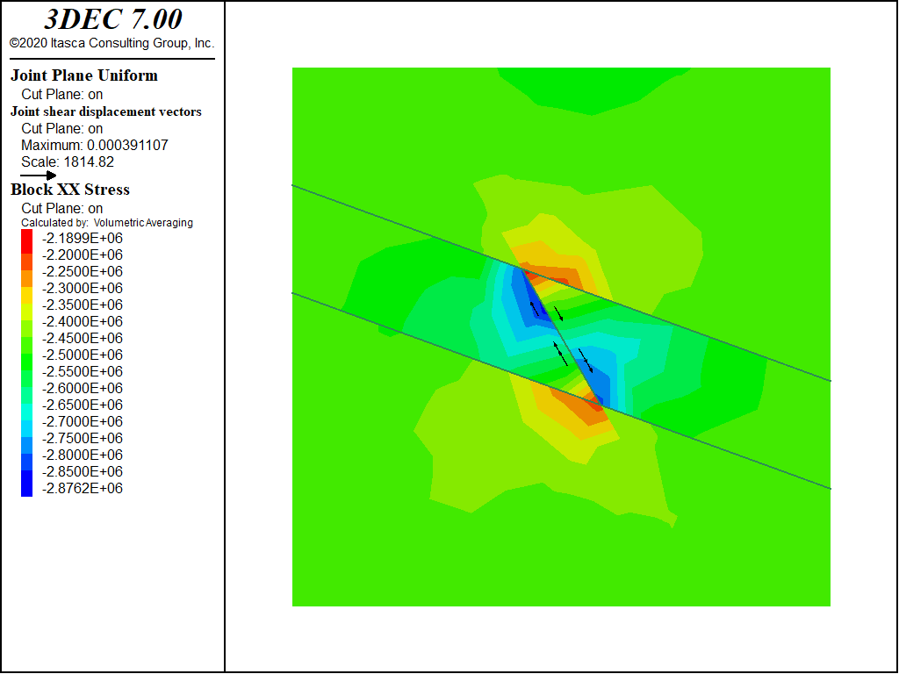

节理介质中的应力
含节理和裂隙介质的初始应力状态可能存在空间非均匀性。这由介质地质历史中经历的应力路径，以及历史不同阶段可能发生的物理过程造成，包括断裂、不连续面上的滑移和分离。应力状态的空间非均匀性可能是地下开挖设计的重要因素，特别是所产生的应力集中不利于开挖稳定性时。
很难判断节理模型中设置的应力状态是否代表原位应力状态。统计分析可能提供一种方法，增强对模型表征的信心。Brady 等（1986）报道了一项采用 UDEC 的此类研究。
使节理模型达到平衡状态时，需要考虑一些建模问题。首先，应在模型中全部节理生成之后，调用 block insitu 命令。这样，沿节理的法向和剪切应力将按初始应力在各节理平面上的分解值初始化。
如前所述，即使内部应力设置为与边界应力一致，节理模型最初也不会处于平衡状态；仍需进行一些计算步，并监测不平衡力。此外，应记录模型多个位置的速度或位移时程。这些历史可很好地指示何时运动已可忽略。在开始下一分析阶段前，用户始终应确保模型在平衡应力状态下的运动已基本停止。
对于指定的初始应力状态和节理强度属性，在模型达到平衡过程中，某些节理可能滑移或分离。局限于模型内部的节理滑移可以接受，其结果是在节理端部形成“锁定”应力。但用户应避免节理破坏延伸至模型边界的条件，这表明模型条件设置不适当。可能需要重新评估所赋应力状态、节理属性、方位和位置。如果调整后节理破坏仍延伸至边界，则应考虑固定边界条件。这意味着节理在边界处被截断。
下面数据文件演示一条倾角 60º 的节理，被限制在两条倾角 20º 的节理之间的情况。在规定初始应力下，60º 节理发生滑移，而 20º 节理不滑移。所有节理的摩擦角均为 30º。
受限节理的滑移
model new
model random 10000
model large-strain on
block create brick -10,10 -10,10 -20,0
;
block cut joint-set dip 60 dip-direction 90 origin 0,0,-10
block cut joint-set dip 20 dip-direction 90 origin 0,0,-8
block cut joint-set dip 20 dip-direction 90 origin 0,0,-12
block join on range pos-z -20,-14
block join on range pos-z -7,0
block zone generate edgelength 2.0
;
block zone cmodel assign elastic
block zone prop dens 2000 bulk 8e9 shear 5e9
block contact jmodel assign mohr
block contact prop stiff-norm 5e11 stiff-shear 2.5e11 friction 30
block contact material-table default prop stiff-norm 5e11 stiff-shear 2.5e11 friction 30
block insitu stress -2.5e6,-2.5e6,-1e7 0,0,0
;
block face apply stress -2.5e6 0 0 0 0 0 range pos-x -10.0
block face apply stress -2.5e6 0 0 0 0 0 range pos-x 10.0
block face apply stress 0 -2.5e6 0 0 0 0 range pos-y -10.0
block face apply stress 0 -2.5e6 0 0 0 0 range pos-y 10.0
block face apply stress 0 0 -1e7 0 0 0 range pos-z 0.0
block gridpoint apply vel-z 0.0 range pos-z -20.0
;
model history mechanical unbalanced-maximum
block hist dis-z pos 0,0,-10
model cycle 1000
下图为块体图，其中以节理剪切矢量指示节理滑移区域。图中还绘制 \(\sigma_{xz}\) 等值线，显示 60º 节理两端附近的锁定应力区。


图 1：受限节理的滑移；图中显示剪应力等值线
| 这些内容对您有帮助吗？… | FLAC3D © 2019, Itasca | 原文更新于 2020 年 10 月 8 日 |